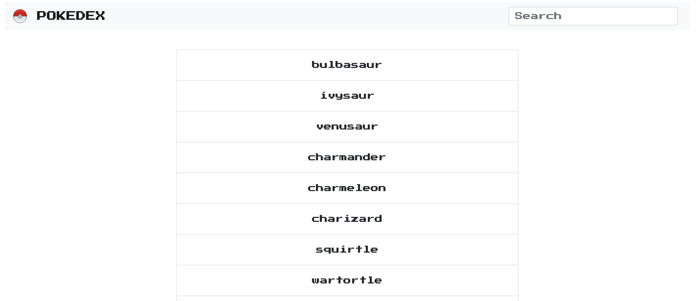

The Pokedex is a web application built using HTML, CSS and JavaScript. Users are able to search for their favorite pokemon. The data is fetched from an external API. Pokedex enables the viewing of each data points/Pokemon in detail using modals. Finally, Bootstrap has been used to create a simple design for users.
The focus of this project was To build a small web application with HTML, CSS, and JavaScript that loads data from an external API and enables the viewing of data points in detail. the Pokedex should not only work but be aesthetically pleasing and easy to use.